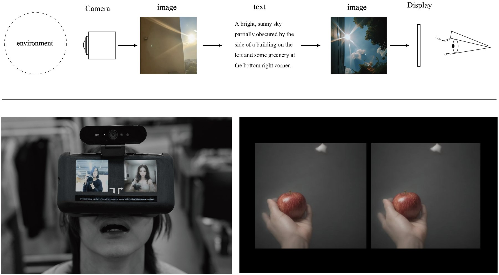
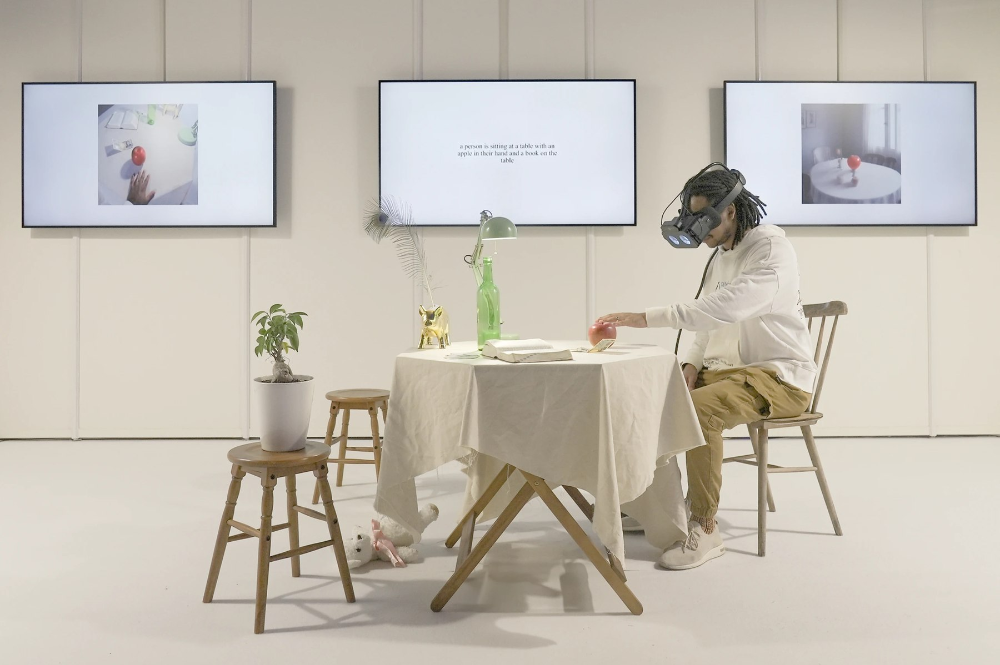

Semantic See-through Goggles
— Linguistic Virtual Reality in (Artificial) Intelligence

Abstract
Semantic See-through Goggles are a kind of glasses, through which the view becomes once a line of text and is re-scenified. Participants wear original goggles equipped with a camera and HMD. First, the AI converts a single image from the camera into a single line of text. Next, the AI generates an image from that line of text, displayed on both eye displays. These processes occur in real time, allowing the user to perceive and act on the real physical world through this redrawn view. This experience confronts, bodily and literally, the kind of radical virtual reality latent in a society that mediates sensory information under language — an attempt to appropriate some of the energy of today's debate over artificial intelligence for a classical inquiry: "intelligence can only see the world under meaning."

